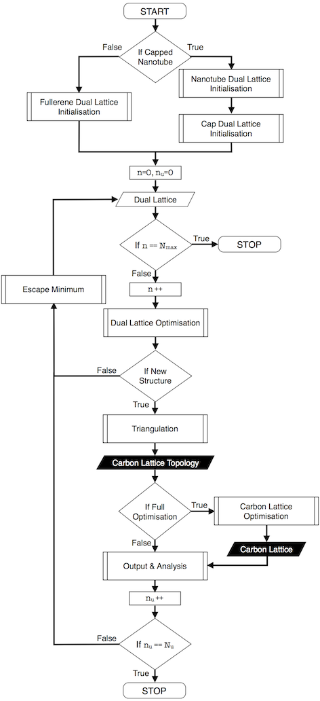

Algorithm Flow Diagram
Previous:
Code
Next:
Non-GUI Class Structure
Up:
Code
9.1 Algorithm Flow Diagram
The flow diagram of the underlying structure construction algorithm in
NanoCap
is shown in Fig.
14
.

Figure 14
:
Algorithm flow diagram in
NanoCap
.
Previous:
Code
Next:
Non-GUI Class Structure
Up:
Code